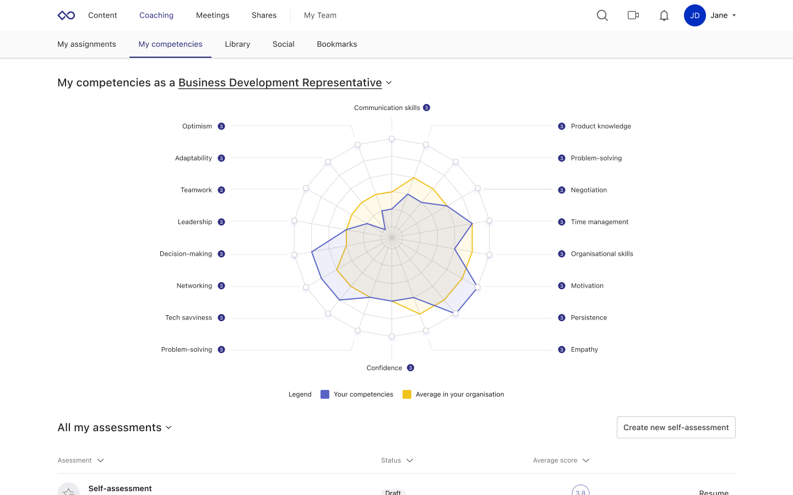
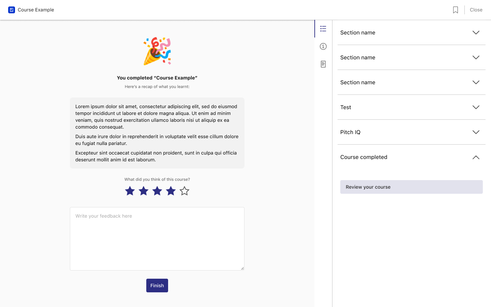
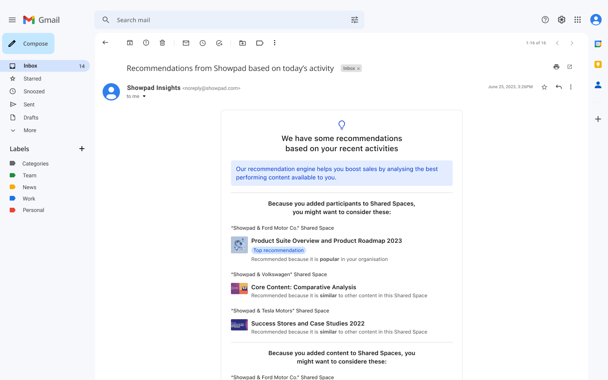
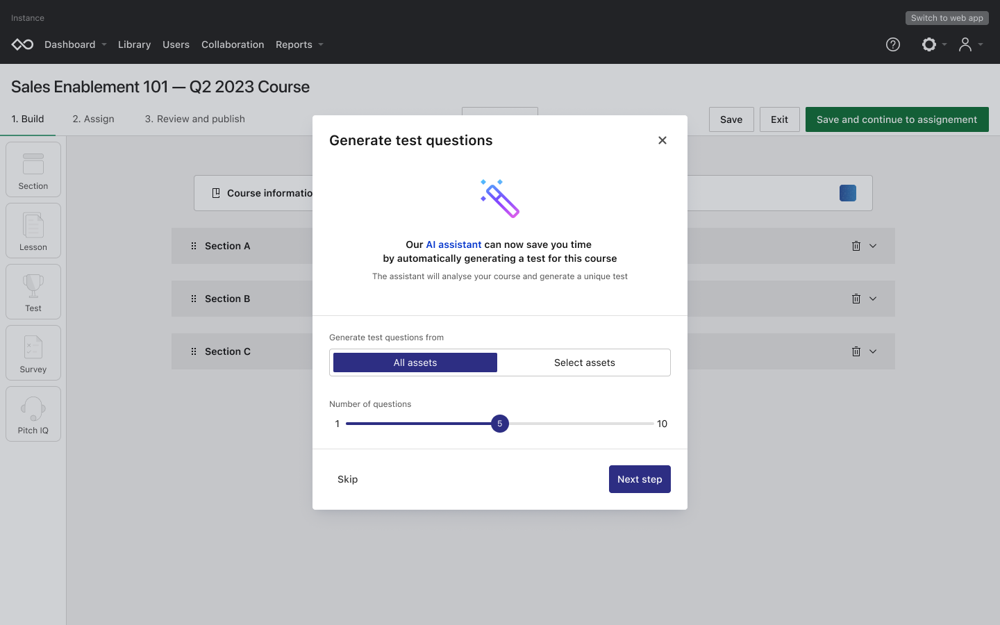

Q4 2023
Forrester Wave Leader Status
This is a draft. Just some bits and bobs about my contributions to Showpad's positive place in the 2023 Forrester Wave Report. Might expand on this later.
Context
Showpad was named a Leader in The Forrester Wave: Sales Readiness Report, Q4 2024, and I couldn't have been more proud to have contributed to this positive result.
Projects driven
Here are some of the projectes that I drove from a design perspective that contributed to the result.
Sales competencies
Sales competencies empowers sales professionals to take control of their training and learning by helping assess and track progress on their skillset.
Learner feedback
This feature lets sales professionals give feedback on learning material they consume via Showpad. This then helps the creators behind that content improve it and better meet their audience's needs.
Just in time learning
Just in time learning is a series of personalised recommendations for sales professionals that takes their goals and habits into account in order to deliver the most relevant and timely learning recommendations.
AI test generator
This feature leverages generative AI to help create learning content faster. After having added the learning material to a course, a user can use this feature to generate multiple choice questions they can add to a test at the end of their course.